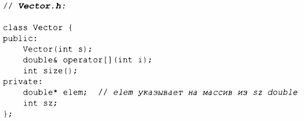
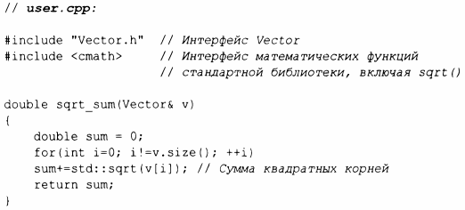
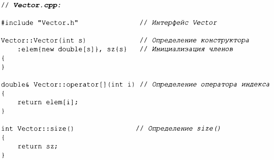
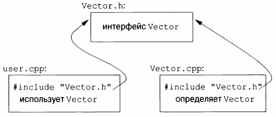

⇐3.1 Введение 3.3 Модули (С++20)⇒
С++ поддерживает понятие раздельной компиляции, когда пользовательский код видит только объявления типов и функций. Определения этих типов и функций содержатся в отдельных исходных файлах и скомпилированы отдельно. Это разрешает организацию программы в виде набора полунезависимых фрагментов кода. Такое разделение может использоваться для минимизации времени компиляции и строгого разделения логически различных частей программы (таким образом минимизируя вероятность ошибок). Библиотека часто представляет собой сборник отдельных скомпилированных фрагментов кода (например, функций).
Как правило, мы размещаем объявления, определяющие интерфейс модуля, в файле с именем, указывающим его предполагаемое применение. Например:
Это объявление размещено в файле Vector. h. Пользователи включают этот заголовочный файл для доступа к данному интерфейсу. Например:
Чтобы помочь компилятору обеспечить согласованность, .срр-файл с реализацией Vector также включает .h-файл с его интерфейсом:
Код в user. срр и Vector. срр совместно использует информацию интерфейса Vector, представленную в Vector. h, но в остальном эти два файла независимы и могут быть скомпилированы отдельно. Графически фрагменты программы могут быть представлены следующим образом.
Строго говоря, использование раздельной компиляции не является языковым вопросом; это вопрос о том, как лучше всего использовать конкретную реализацию языка. Однако он имеет большое практическое значение. Наилучший подход к организации программы состоит в том, чтобы рассматривать программу как набор модулей с точно определенными зависимостями, логически представить модульность с помощью языковых средств, а затем использовать физическую модульность с помощью файлов для эффективной раздельной компиляции.
Файл .срр, компилируемый сам по себе (включая файлы .h, которые он включает с помощью директивы iinclude), именуется единицей трансляции. Программа может состоять из многих тысяч единиц трансляции.